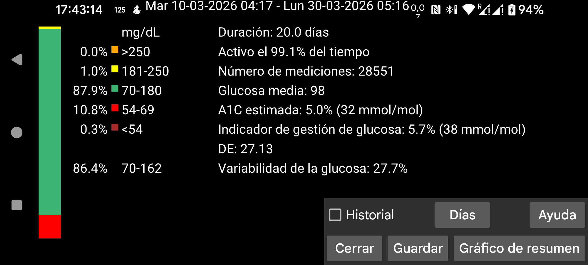
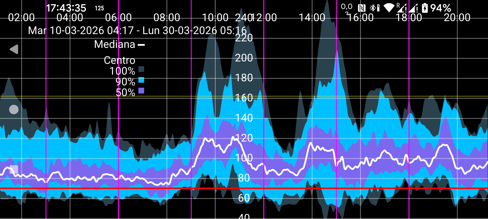

ar be de es fr it nl pl pt ru tr uk zh en
Algunas estadísticas están tomadas de AGP con pequeñas modificaciones.
El número de días analizados puede cambiarse con el botón Días. El periodo analizado termina en la hora mostrada en el borde derecho de la pantalla y se extiende hacia atrás el número de días indicado. Para estas estadísticas solo se usan valores de glucosa de Stream.
A la izquierda se muestra el porcentaje de mediciones que cayó dentro de distintos rangos de glucosa.
Es el porcentaje de las mediciones posibles que Juggluco recibió del sensor.
A partir de la glucosa media se predice la HbA1c. Se usa una fórmula más antigua (Nathan et al., 2008). También puedes calcularla aquí: https://professional.diabetes.org/diapro/glucose_calc . En apps más nuevas se usa GMI.
También es un predictor de HbA1c con una fórmula de uso general. Curiosamente, en mi caso la fórmula antigua predice mejor mi HbA1c que el GMI.
Es el coeficiente de variación, %CV=(DE/media)*100 %, como medida de la variabilidad glucémica. Un coeficiente de variación más alto significa que los valores de glucosa se apartan más de la media.
Muestra un resumen de tus valores de glucosa para los días indicados. Incluye estadísticas, el gráfico de resumen y una imagen de días individuales. Puedes imprimir el informe como PDF y enviarlo por correo a tu profesional sanitario. Para ello debes haber activado menú izquierdo → Ajustes → Intercambiar datos → Servidor web. Se abrirá en el navegador la URL http://127.0.0.1:17580/x/report.
Para que se muestre, deben existir al menos 9 días de valores de Stream. Se utilizan todos los valores de Stream del periodo correspondiente para determinar, para cada minuto del día, cómo se distribuyeron los valores de glucosa. La mediana es el valor por debajo del cual cae el 50 % de los valores para cada minuto del día. El azul más claro representa el área donde se encuentra el 100 % de los valores. Un azul algo más oscuro representa el área alrededor de la mediana que contiene el 90 % de los valores. El azul más oscuro contiene el 50 % de los valores.
Si observas los límites de estas áreas como líneas, puedes describirlo así: por debajo de la línea más baja está el 0 % de los valores, por debajo de la segunda línea el 5 %, por debajo de la tercera el 25 %, por debajo de la línea de la mediana el 50 %, y luego 75 %, 95 % y 100 %.
Toca la pantalla para cerrar el gráfico de resumen, salvo en los bordes izquierdo y derecho, que lo desplazan a izquierda o derecha. También puede desplazarse arrastrando un dedo. Si en Ajustes está activado Escala manual para tiempo, puedes cambiar la escala temporal acercando o separando dos dedos. También puedes mover el límite superior e inferior del gráfico desplazando un dedo en la mitad superior o inferior del mismo.